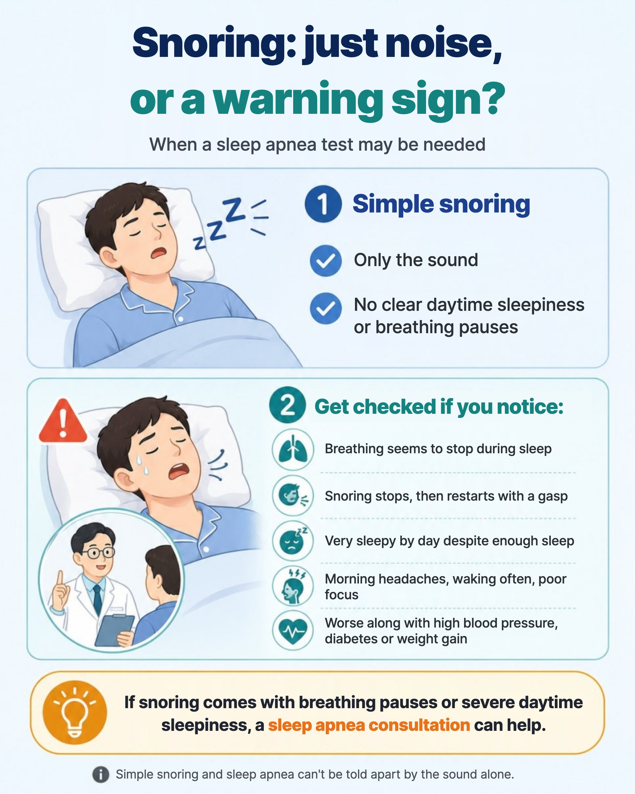

The snoring you hear every night can be hard on the people who share your room, yet the person snoring often doesn't even know they do it.
"I've always snored a bit."
"It happens when I'm tired."
"I think it's because I've put on some weight."
It's easy to brush it off like this, but snoring is sometimes more than a sleeping habit — it can be a sign that breathing is unstable during sleep. If you're worried about your own or a family member's snoring and wondering about a sleep apnea test, let's start with how to tell simple snoring from snoring that needs attention.
In this article 6 sections · 4 min read
Why does snoring happen?
Because of its name, snoring feels like a nose problem, but it is really the sound of a narrowed upper airway.
When you fall asleep, the muscles around the throat relax. If the airway narrows, the air passing through makes soft tissues such as the soft palate, uvula and base of the tongue vibrate. That vibration is the snoring sound.
Many things make snoring worse: rhinitis or a badly blocked nose, large tonsils or adenoids, a tongue that falls backwards, a small or set-back lower jaw, and extra fat around the neck from weight gain. With chronic nasal blockage you tend to sleep with your mouth open, which pushes the jaw and tongue back and narrows the airway further. So snoring needs a look not just at the nose, but at the throat, tonsils, tongue base and jaw as well.
How is simple snoring different from sleep apnea?
When the airway narrows a little and only makes noise, it's usually called simple snoring. But if the airway narrows more or briefly closes, air can't get through properly, and breathing becomes shallow or stops. That is obstructive sleep apnea.
In sleep apnea, apneas (pauses) and hypopneas (shallow breathing) repeat throughout sleep. Blood oxygen drops, and the brain senses danger and wakes you very briefly to restart breathing. The problem is that people usually don't remember these short awakenings. You may seem to sleep for a long time, but deep sleep keeps being broken, so you wake up unrefreshed and feel sleepy, tired and unable to concentrate during the day.

When should you get checked for sleep apnea?
If any of the following come with snoring, it's hard to regard it as just noise:
- A family member has seen you stop breathing in your sleep
- Snoring suddenly stops, then restarts with a choke or gasp
- You are very sleepy during the day despite enough sleep
- You often nod off while driving, in meetings or watching TV
- You wake up with a heavy head or a headache
- You wake often and get up several times a night to urinate
- Your concentration or memory feels worse than before
- You have high blood pressure, an irregular heartbeat or diabetes, or your snoring has got worse as you've gained weight
Snoring with witnessed breathing pauses, or snoring with daytime sleepiness, in particular deserves an accurate evaluation.
What happens if it's left untreated?
Sleep apnea doesn't end with a bad night's sleep. When breathing is repeatedly blocked, oxygen drops and the body treats it as an emergency. Repeated over a long time, this can put strain on blood pressure control, heart rhythm, metabolism and the brain's recovery during sleep.
Obstructive sleep apnea is known to be associated with high blood pressure, arrhythmias, heart attack, heart failure, stroke, type 2 diabetes, and accidents caused by daytime sleepiness. Of course, not everyone who snores is at risk. But if snoring comes with breathing pauses, severe daytime sleepiness, morning headaches or high blood pressure, it's better to treat it as a breathing problem rather than a sleeping habit, and get it checked.
How is it diagnosed?
At an ENT consultation, an endoscope is used to see where the airway narrows: nasal blockage, rhinitis, a deviated septum, enlarged tonsils, the uvula and soft palate, or the tongue base.
But how often breathing actually stops during sleep, how far oxygen falls and how often sleep is interrupted can't be seen in the clinic room. That's what a sleep study (polysomnography) is for. Over one night it measures brain waves, eye movements, muscle activity, ECG, breathing, oxygen saturation and sleeping position, to assess the degree of apnea and the quality of sleep objectively. For how the numbers are read, see how to read your sleep study report.
When sleep apnea is suspected and certain criteria are met, Korean National Health Insurance may cover the sleep study; with simple snoring alone and low medical need, it may not. Coverage depends on your symptoms, examination findings and other conditions, and the criteria can change, so it's best to check your eligibility at a consultation before the test.
In summary
Snoring is common, but not all snoring is just noise. What matters is not the sound but whether your airway stays open while you sleep.
If your snoring stops with breathing pauses, or you're very sleepy during the day even after a full night's sleep, it's worth finding out why. Checking your breathing during sleep objectively is the first step toward healthy sleep. Dr. OH can explain the evaluation and results in English.
This article is an English adaptation of a Korean post by Dr. OH JUNGHO. It is general health information, not a diagnosis or treatment plan for any individual. Please consult a doctor about your own situation.